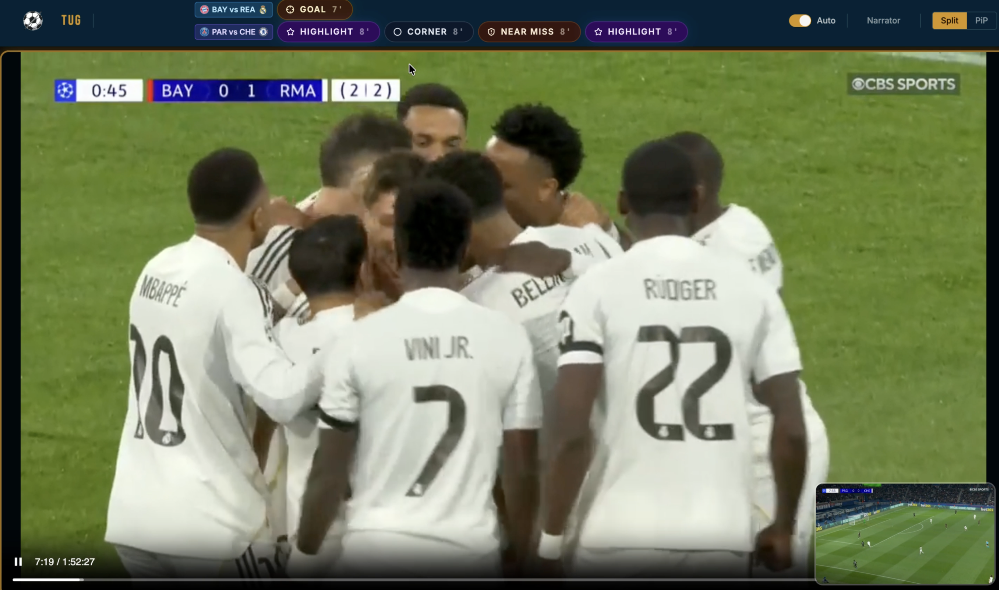
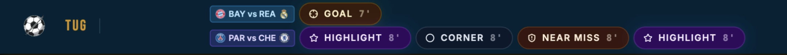

Picking a hackathon idea is harder than it sounds, especially when you’re trying to challenge yourself and not to build something embarrassing.
Last week me and a few friends (Mert Milenov and Kris Dimitrov) from college (UCC) signed up for the ACM World Cup 2026 Hackathon. This year the theme was really freeing - we were tasked to create something that relates in any way to the sport of football and/or to the upcoming world cup. We were looking forward to this hackathong for a few weeks now and we did know it is going to be world cup realted so we did have some ideas in store. Quickly after the initial brainstorming session we had chosen 2 that were both
- Challenging enough to be interesting
- Complemented each other in terms of the implementation (Both shared the same base premise for the implementatation and differend in the “presentation” of that base premise)
That’s how our (pretty ambitious) ideas came to life. The first one was a problem that Kris had experienced while following the latest Premier League - multiple matches were happening at the same time. Some of which were ones that Kris wanted to watch. How could he watch them both at the same time, while not diverting his attention too much from each ?
Our solution was a system that would detect the most important and interesting points from a match and switch between the screens dynamically. When there was a goal, a fault or a kickoff - anything worth your attention - we would switch to that screen and put the other match in the corner, still accessible, just waiting for its moment to shine…

There are a few things happening on the screen. The first is the line at the top showcasing the important moments we have detected so far for each match with a timestamp at the end showcasing when the moment happened.

The second is the “Narrator” button at the top right corner which I will explain in a bit. (We had a TON of trouble with that one :D)
Here is a quick demo video of how the whole thing worked.
Detecing important moments - The How
So how did we do this? The majority of the first day this two-day hackathon was spent on researching and trying to find the best way to achieve this with maximum performance, accuracy, reliability and minimum cost.
The main problem we were trying to solve was how can we, given a football match - both the video and audio - detect the most important moments in the match?
After some googling and researching we got a few possible solutions:
-
SoccerNet-v2 - an open benchmark and dataset for broadcast soccer understanding, with pre-trained action spotting models built on top of ResNet-152 features. It covers 17 action classes across 500 full games. Seemed perfect on paper. In practice, accuracy was unreliable it would fire at high confidence on events that weren’t there, and under-detect obvious ones like goals. The bigger problem: it double-triggered on replays. Broadcast footage replays every notable moment, and the model had no concept of that - it would spot the same event twice, live and again on replay, with no way to deduplicate reliably.
-
Using an external API - We searched for a sports API that was cheap, accurate on historical data, and detected enough event types to make the screen-switching feel alive. We landed on sports.bzzoiro.com. First red flag: the website looked AI-generated. We bought the API anyway for 3 euros and dove in. The documentation was either non-existent or flat-out wrong, also almost certainly AI-generated. Hopefully they fix it at some point.
The real problems surfaced during integration. Historical match coverage was sparse. Matches we wanted to use for the demo were simply missing, forcing us to hunt for different videos and footage. That wasted a significant chunk of our already limited time.
The deeper problem, and the reason we ultimately abandoned it: for historical matches the API only returned a handful of event types. Goals and fouls. Nothing else. No attacks, no near misses, no highlights. For most matches that means a handful of events total, so the screen would barely ever switch and the whole idea fell flat in the demo.
On top of that, all timestamps were in “match time” (minutes into the game) rather than “video time” (position in the actual video file). We had to hardcode an offset just to align the two for the demo. Not a dealbreaker on its own, but one more thing piling up. All of this combined ruled the API out.
-
OpenAI’s Whisper TTS combined with an LLM This was our was idea that we really wanted to avoid at first for a multitude of reasons. First of all both LLMs and Whisper are not cheap to run (at all actually, and we are going to talk about the financial damage of this whole endeavour in a bit). Second we just really were a bit burned out of all the LLM/ChatGPT hackathon projects and we were sure absolutely everybody would have some kind of “AI solution”… Nonetheless we were left only with this choice at the end.
The idea was simple. Have Whisper STT take the narrotor and conver it into text, then pass this text to an LLM and get a structured response with the 1. timestamp of when it happened 2. what happened. We would later user the timestamp to also have the user be able to jump to that moment in the match.
Unfortunately it was not as simple as we thought. Whisper was not able to relibable extract the narrator text from the video due to outside noise such as screams from the crowd. Kris was working hard on creating a workflow where we would take the original video audio and then lower selectively the audio of the crowd while keeping the volume of the narrator the same so whisper could detec the speech better. After a couple of grueling hours he finally got that working and we had a nice workflow for extracting the narrator tet.
Now all that was left was to paste in the narrator text into the LLM and get the important moments. We tought we are almost done… Oh how wrong we were.
Streaming the match, chunking and processing the video in real time.
We created a solution that worked well when you got the full video. But we did not have a pipeline that would process chunks of the video and stream them in real time…
Here we had to learn a ton of things around HLS (Http Live Streaming) and how to stream video in real time. We had to learn how to chunk a video into parts, process it (run our filters on it and then send it to the LLM) and then stream it back to the user.
All of this was very computationally expensive (mainly the ffmpeg filters part). The whole pipeline looked like this

BONUS: Creating a custom narrator for our match
Remember that little “narrator” button at the top right corner? Well it is there for a reason. We had the idea of creating a custom narrator where we would have him analyze the match using our preexiting imporatnt mometns workflow but slap on top of it Whisper TTS (Text to Speech) and a custom prompt embedded on each chunk that would allow you to have a custom narrator that you can “Bribe” and have him joke around with your favourite player or if you were watchin the match with a bunch of friend he might even make a joke or shout ot to them.
The flow was similar but mutch more complicated due to the fact that now not only did we need to process the video and extract the moments from it’s audio we would need to create new audio and layer it on top of the crowd audio fo the original video and splice everyhting into correct format to be ready for HLS to stream it.
At the end this “kinda” worked. It was unfortunately not as good as we had hoped as it was too slow for the video to play in real time.(should i put this in ?) To be honest now that we thing I bout this we probalb coudl have optimeze this a bunch by storring the video split into chunks some prepared before hand …